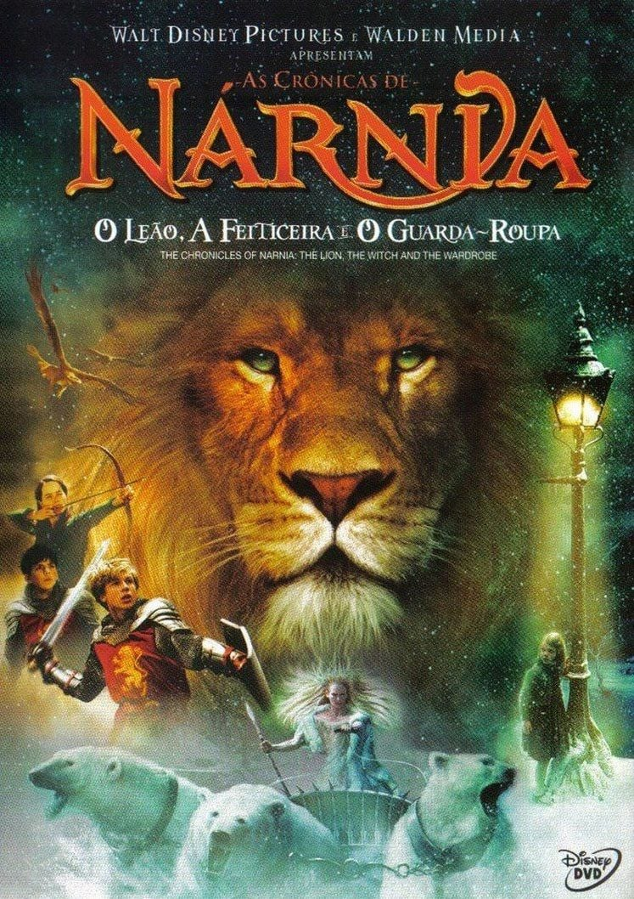

Lista de recomendação
|

Gênero:Aventura, Fantasia, Família Disponível em: Amazon Prime Video. |
NotasIMDB:6,9 Rotten Tomateos: Público:76% Público: 85% J&J:7,6 |
SinopseQuatro irmãos - Peter, Susan, Edmund e Lucy - são enviados para o campo durante a Segunda Guerra Mundial, onde, em uma casa velha, descobrem um guarda-roupa mágico que os leva a Nárnia, um mundo encantado. Lá, encontram criaturas místicas e descobrem que a Feiticeira Branca, que impôs um inverno eterno, é a grande vilã. Os irmãos se unem ao Leão Aslan, o legítimo rei de Nárnia, para lutar contra a feiticeira e restaurar a paz ao reino. |
|
Review pessoalA adaptação cinematográfica do famoso livro de C.S. Lewis é encantadora e traz a magia da obra para a tela com riqueza visual e efeitos especiais impressionantes. A trama é envolvente, e as cenas de batalha são emocionantes, mas o ritmo do filme, por vezes, parece arrastado. Além disso, alguns personagens poderiam ter mais desenvolvimento para tornarem-se mais complexos. No geral, é uma excelente experiência para todas as idades, com uma mensagem sobre coragem e sacrifício que ressoa profundamente. |

Gênero: Fantasia, Aventura, Família, Mistério Disponível em: HBO Max. |
NotasIMDB:7,6 Rotten Tomateos: critíca:81% Público:85% J&J:8,6 |
SinopseHarry Potter, um garoto órfão, descobre aos 11 anos que é um bruxo e é convidado a estudar na Escola de Magia e Bruxaria de Hogwarts. Lá, ele faz novos amigos e aprende sobre o mundo da magia, enquanto começa a desvendar um mistério sobre a Pedra Filosofal, um artefato mágico que pode conceder a imortalidade. Ao longo do ano, Harry enfrenta diversos desafios, incluindo uma ameaça de um mago das trevas, Lord Voldemort. |
|
Review pessoal"Harry Potter e a Pedra Filosofal" é uma introdução mágica ao universo de J.K. Rowling, trazendo à vida o mundo da magia com fidelidade aos livros. O elenco jovem, especialmente Daniel Radcliffe, Emma Watson e Rupert Grint, tem grande química, o que ajuda a criar uma base sólida para a série. Embora o tom seja mais infantil em comparação aos filmes subsequentes, o filme estabelece o cenário para os eventos que se seguirão. A nostalgia e a magia do filme são inegáveis, e ele é perfeito para iniciar a jornada do jovem bruxo. |

Gênero: Aventura, Fantasia, Ação Disponível em: Amazon Prime Video. |
NotasIMDB:7,8 Rotten Tomateos: critíca:64% Público:72% J&J:8,8 |
SinopseBilbo Bolseiro, um hobbit pacato, é inesperadamente recrutado por Gandalf, o mago, para ajudar um grupo de anões a recuperar o Reino de Erebor, que foi tomado pelo dragão Smaug. A jornada é repleta de perigos, encontros com criaturas místicas e um crescente confronto com o próprio dragão. |
|
Review pessoal"O Hobbit: Uma Jornada Inesperada" traz uma aventura visualmente impressionante, com a grandiosidade de "O Senhor dos Anéis", mas, por ser uma adaptação de um livro mais curto, o filme peca pelo alongamento excessivo da história. Embora o ritmo seja mais lento do que os filmes de "O Senhor dos Anéis", a exploração do mundo da Terra-média e o desenvolvimento do personagem de Bilbo são cativantes. A trilha sonora, os efeitos especiais e os momentos de ação são notáveis, mas a decisão de dividir o livro em três filmes se mostra uma escolha arrastada. |